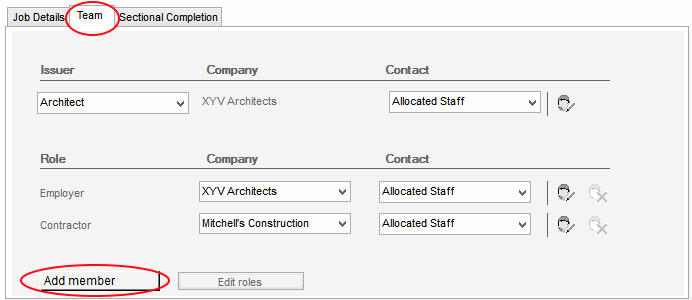

Job Team tab |
This editor stores all the information about the team members for the current job. The issuer will be automatically populated with the details previously entered in the Tools > Edit Issuer Details dialog. The issuer's role on a job can be changed by selecting the Issuer button. The Employer and Contractor will be automatically entered as a result of completing the associated fields in the Job Details editor.
The information entered on the Job Team editor is used to populate the Form Distribution lists and associated Transmittal Sheet.

It is possible to add more members to the team by either clicking on the Add member button or going to Job > Add Team member > <Role> and selecting the appropriate role. The user can further add custom roles by clicking on the Edit roles button or going to Tools > Roles... - for more information on this, see Roles Editor.The user can now select a Company and Contact from their respective drop down lists. If their desired Company or the Contact doesn’t appear in the list, the user can create a new Company or amended an existing Company to insert Contact details via the Address Book.
See Also:
Address Book
Setting up a New Job
Sectional Completion tab
Setting up Roles
Form Distribution List
Transmittal Sheet